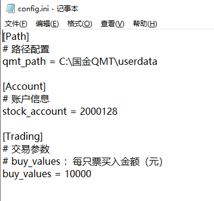
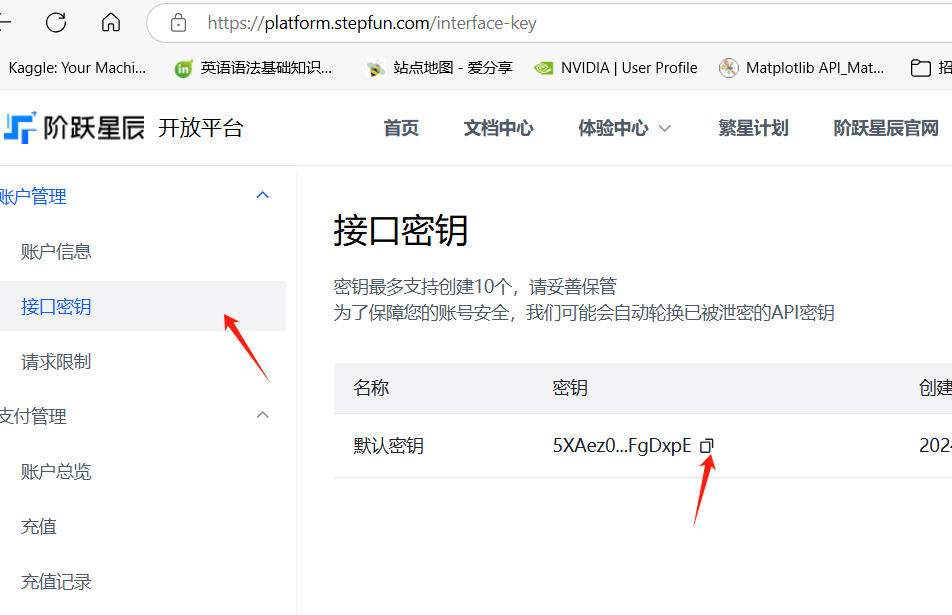
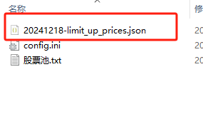
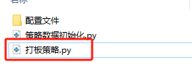

QuantLimit#
该项目实现了一种量化打板策略，用于A股股票交易，涨停板制度只存在于A股市场,
旨在识别并利用市场中潜在的涨停机会。该策略通过技术指标、历史价格数据和成交量分析，股吧数据分析获取可能达到涨停的股票池，并在股票涨停瞬间买入以获取隔日高溢价。
安装步骤#
克隆仓库：
bash
复制代码
git clone https://github.com/123quant/QMT-QuantLimit.git
安装所需依赖：
复制代码
pip install -r requirements.txt
初始化playwright，只需要做一次
python -m playwright install
使用方法#
1.配置参数
打开 配置文件->config.ini

本策略通过miniqmt实现，需要配置三个参数
qmt_path ：qmt软件的安装路径
stock_account ：股票账号
buy_values ：每只票买入金额
2.填好配置文件，第二步上传股票池
2.1打开 配置文件->股票池.txt

把需要监控的股票填进股票池，也可以使用同花顺、通达信导出的股票池。
2.1新增大模型和问财自动选股
打开配置文件需要填写3个参数
api_key： 自己的大模型的api_key，没有的可以点击下面的链接注册申请

model_name：选择哪个大模型，现在支持 kimi 和 阶跃星辰（step）
这两个模型都可以免费申请使用

gygs_data_hours： 配置完大模型参数还有就是我们的数据来源与 韭研公社 ，gygs_data_hours 是获取社区前几个显示的数据给大模型
最后运行代码获取大模型股票池
#在运行代码前需要先cd 到本项目目录下
python .\选股\舆情选股\big_model_api.pyc

运行结束就会在 .\选股\舆情选股 目录下看到一个股票池
3.在每日打板策略运行前，需要先初始化涨停板数据
直接运行 策略数据初始化.py
#先进入当前目录
python 策略数据初始化.py

运行结束后在配置文件价下有一个json数据，记录今日沪深A股的涨停价

4.最后直接运行策略，开始打板
#先进入文件目录
python ./打板策略.py

后续#
本项目后续会继续完善，包括但不限于一下几个方面：
自动股票池：本功能已经实现大模型获取韭研公社数据自动选股，后续还需更新
加入L2数据：L1数据是3s一个的切片，L2数据更能实时的监控打板。
加入异动打：根据盘中异动自动加入打板监控
。。。
加入#
有打低位板的朋友可以一起探讨